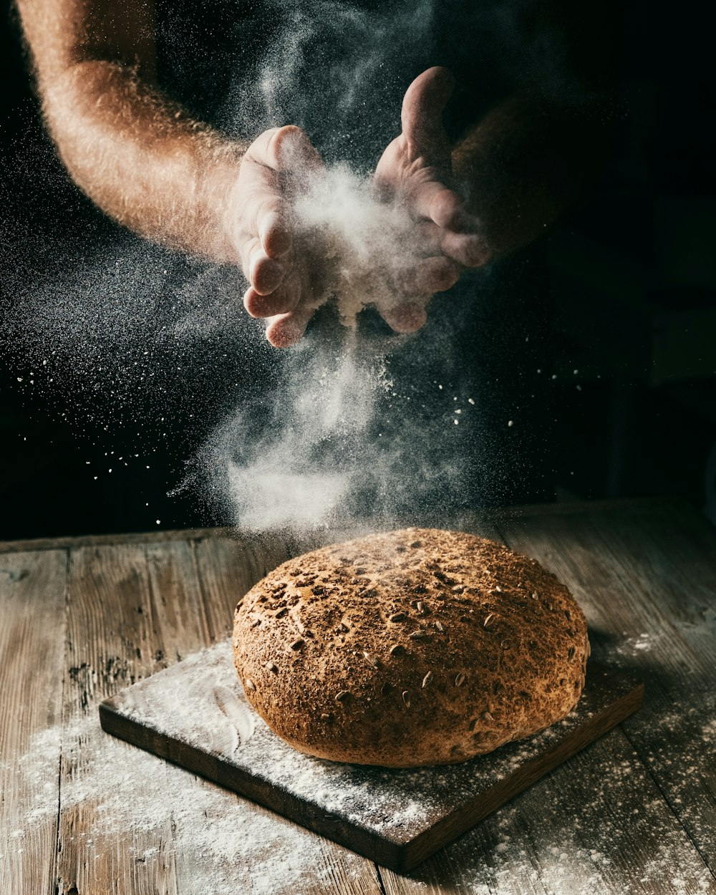

Espécimen 01
Cereales & fermento
Molienda de piedra y fermento propio
Harinas de trigo de variedad antigua, molidas en frío para conservar el germen y el aroma. El fermento madre se alimenta a diario en el obrador.